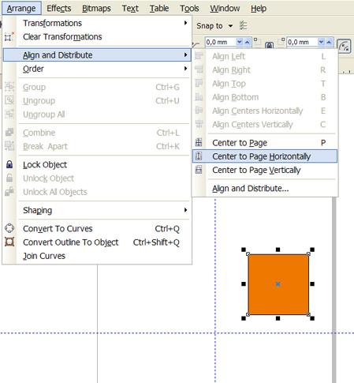
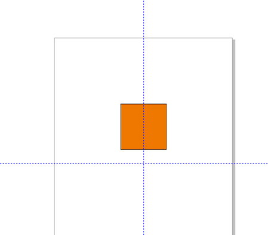

Сбор ошибок CorelDRAW версии 15.2.0.661
Sancho / 22.02.2010, 17:36/00:41
Форум:
Если вы нашли ошибку в CorelDRAW X5, расскажите о ней в этой теме, и если она подтвердится, то я обязательно сообщу о ней разработчикам.
Правила:
1. Обязательно указать операционную систему (XP, Vista, 7...).
2. Расписать поэтапно, как повторить ошибку.
Смещение делал 2-10мм. На смещённом контуре сглаживается угол.
В X4 такого не было.
Прилагаю скрин и сам файл.
Простой пример: Допустим нужно поменять цвет объекта с С100M0Y0K0 на С100M0Y0K20. Для начала нужно выделить этот объект (с активным Auto Apply Color) или сначала взять с него пробу пипеткой (допустим, исходный цвет неизвестен, а общая задача формулируется как "сделать немного темнее"), сразу после этого слайдеры в докере исчезают, а на их месте возникает стандартная палитра. Варианта С100M0Y0K20 там понятное, дело нет. Материшься и переключаешь режим докера обратно, и только затем получаешь возможность задать необходимый цвет. Очень удобно, не правда ли?
Поскольку часто такой сброс происходит, а иногда - нет (закономерности пока не обнаружил), есть слабая надежда, что это все же глюк.
И еще интересует вопрос - когда наконец исправят опечатки в меню Arrange/Align and Distribute (появившиеся с версии Х4)? Нажимаешь на кнопку Align Vertically - происходит выравнивание относительно горизонтальной оси страницы, нажмешь Align Horizontally - выравнивание случается по вертикальной оси. Может это и осознанный шаг (с совсем неочевидной логикой), но на опечатку похоже как-то больше ;)
На первой картинке видно, что на пиктограммке напротив пункта меню Align Horizontally совершенно явно нарисована ВЕРТИКАЛЬНАЯ ось.

Соответственно и выравнивание объекта происходит по вертикальной оси (вторая картинка).

Сorel X5 Trial ENG с офф. сайта
Хотя как посмотреть. По мне так правильно, а вообще совершенно пофигу ибо меню не пользуюсь
Иногда (закономерность не определена, возможно при работе с "большим" файлом) вылетает при трансформировании текста (как обычного, так и "параграфа"), или при дублировании текста с правой кнопокй мыши. Причем вылетает по-хамски, не попрощавшись, а иногда сам файл потом вообще не открывается - на помощь приходит backup. Полчаса работы - в топку.
Ставил и официальный триал,*****, версии 486, 488, 489, и русский, и английский, и везде одна и та же фигня - вылетает.
В-общем, новый корел чертовски напоминает Fallout 3 :(
В X4 тоже была такая же фигня, только все время появлялось окно со спасательным кругом. Эээ... recovery wizard, или как там его... В X5 я эту утилиту всего пару раз видел, в основном - тупо вылет на рабочий стол.
Страницы